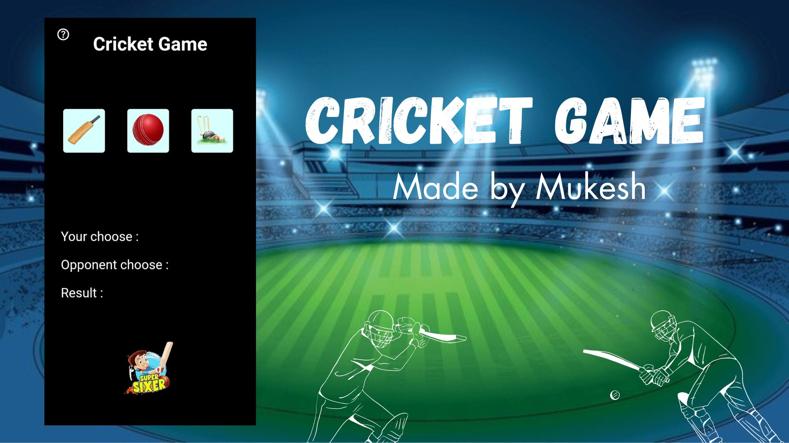
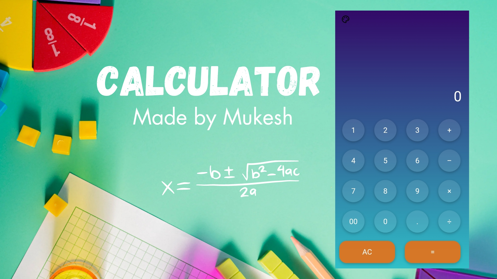

Browse the best free business, portfolio, and blog HTML5 responsive website templates. Then customize your template in Webflow without code.
Cricket Game
Cricket is a bat-and-ball game played between two teams of eleven players on a field at the centre of which is a 22-yard (20-metre) pitch with a wicket at each end, each comprising two bails balanced on three stumps.
The batting side scores runs by striking the ball bowled at one of the wickets with the bat and then running between the wickets, while the bowling and fielding side tries to prevent this (by preventing the ball from leaving the field, and getting the ball to either wicket) and dismiss each batter (so they are "out").
Means of dismissal include being bowled, when the ball hits the stumps and dislodges the bails, and by the fielding side either catching the ball after it is hit by the bat, but before it hits the ground, or hitting a wicket with the ball before a batter can cross the crease in front of the wicket. When ten batters have been dismissed, the innings ends and the teams swap roles.
The game is adjudicated by two umpires, aided by a third umpire and match referee in international matches. They communicate with two off-field scorers who record the match's statistical information.
Food - eCommerce website

Food eCommerce is one of the fastest-growing product categories in eCommerce, experiencing year-over-year growth of 58.5% during 2020. According to Statista, the industry is forecast to bring in nearly $47.6 billion in 2025.
This major eCommerce growth signals how consumers are becoming more reliant on online shopping to meet their needs in the food and beverage category.
In this post, we're going to cover the biggest food eCommerce trends in 2024 that are helping food and beverage brands to gain market share and boost online sales.
Purely made with Htm css javascript
Calculator
As everyone grows up, everyone has to take a Math class from Kindergarten to twelfth grade. At the early stage of math classes, most of the problems were solved by using pencil and paper.
Eventually, calculators took over the method of using pencil and paper. Calculators were first made in 1642 by a French mathematician, Blaise Pascal. According to the article, “Who Made the First Calculator,” calculators were created for the usage of helping a person add and subtract numbers without using their hands (“Who made the first calculator”).
Problem solving is an essential skill that all individuals must learn in order to be a successful human within the society. Therefore, the skill is taught from an early age, and is built upon throughout the academic years. In grade school, students learn addition and subtraction which is taught using paper and pencil.
Purely made with Htm css javascript
Tic Tac Toe

Tic-tac-toe (American English), noughts and crosses (Commonwealth English), or Xs and Os (Canadian or Irish English) is a paper-and-pencil game for two players who take turns marking the spaces in a three-by-three grid with X or O. The player who succeeds in placing three of their marks in a horizontal, vertical, or diagonal row is the winner. It is a solved game, with a forced draw assuming best play from both players.
You probably already know how to play Tic-Tac-Toe. It's a really simple game, right? That's what most people think. But if you really wrap your brain around it, you'll discover that Tic-Tac-Toe isn't quite as simple as you think!
Tic-Tac -Toe (along with a lot of other games) involves looking ahead and trying to figure out what the person playing against you might do next.
Purely made with Htm css javascript